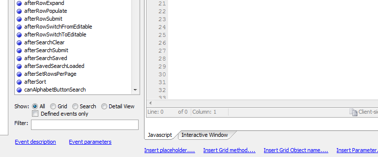
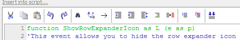

Improved Web Grid Code Editing
In Version 11, code editing within a grid has become easier and more powerful, both for Xbasic and JavaScript code.There are separate, modeless editing panes for Server-side Events, Client-side Events, Xbasic Functions, and JavaScript Functions. All four panes do syntax-coloring and auto-suggest as you type. All four pane have companion tabs for an Interactive Window for the appropriate language, Xbasic or JavaScript, and have links to dialog that help you insert commonly used expressions for the event context. The two Events panes have event selectors, and the Client-side Events pane has a filter for the event selector.

Each pane has its own editing toolbar. The Xbasic Functions and Server-side Events toolbars include a Check Syntax button for Xbasic. All four toolbars have buttons for cut, copy, paste, undo, redo, find, replace, indent, outdent, left align, format code, transform code, comment out, and un-comment out.
